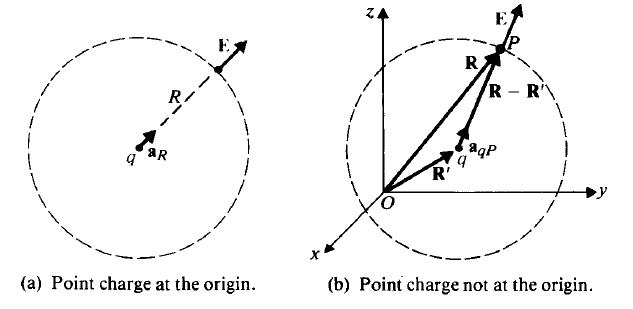
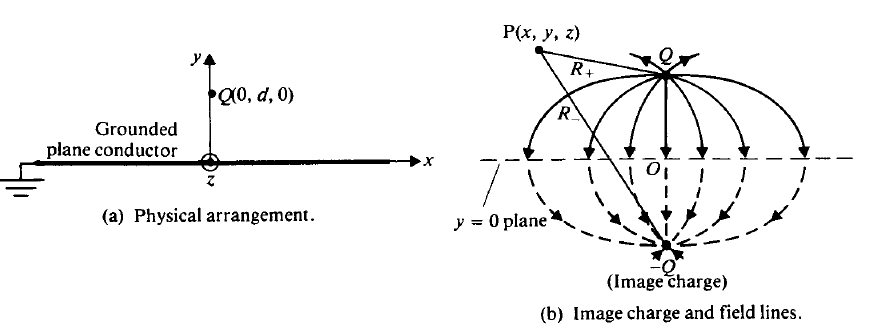
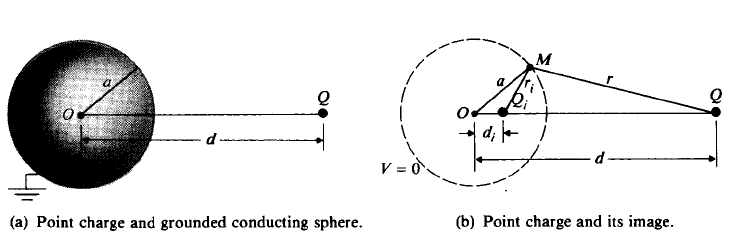
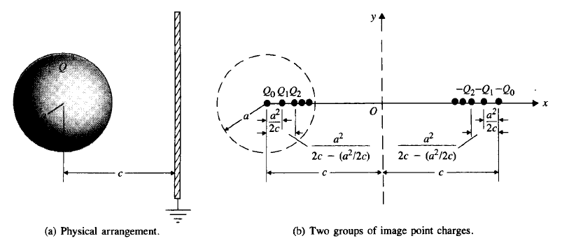
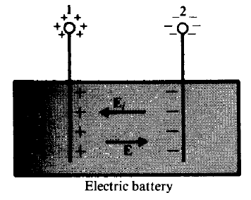
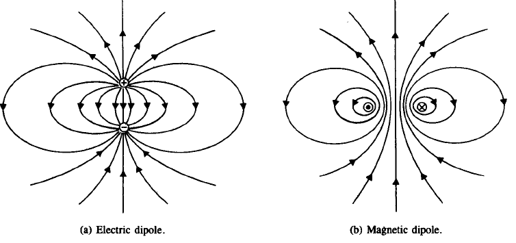
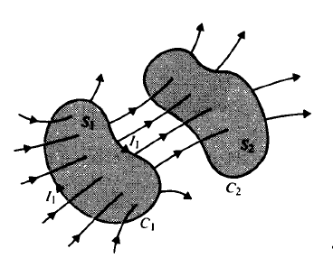

We define the vector that represents both the magnitude and the direction of the maximum space rate of increase of a scalar as the gradient of that scalar.
The volume integral of the divergence of a vector field equals the total outward flux of the vector through the surface that bounds the volume.
∫V∇⋅Adv=∮SA⋅ds
1.5 Curl of a vector field
The curl of a vector field is a vector whose magnitude is the maximum net circulation of A per unit area as the area tends to zero and whose direction is the normal direction of the area when the area is oriented to make the net circulation maximum.
Surface integral of the curl of a vector field over an open surface is equal to the closed line integral of the vector along the contour bounding the surface.
∫s(∇×A)⋅ds=∮CA⋅dℓ
1.6 Two Null Identities
∇×(∇V)≡0
∇⋅(∇×A)≡0
1.7 Helmholtz's Theorem
A vector field is determined to within an additive constant if both its divergence and its curl are specified everywhere.
F=−∇V+∇×A
2. Static Electric Fields
2.1 Fundamental Postulates of Electrostatics in Free Space
Two fundamental postulates of electrostatics in free space.
∇⋅E=ϵ0ρ∇×E=0
Postulates of Electrostatics in Free Space Differential Form ∇⋅E=ϵ0ρ∇×E=0 Integral Form ∮SE⋅ds=ϵ0Q∮CE⋅dℓ=0
2.2 Coulomb's Law
E=aRER=aR4πϵ0R2q(V/m)

Ep=4πϵ0∣R−R′∣3q(R−R′)(V/m)
E=0 everywhere inside a conducting shell.
2.3 Electric Field Due to System of Discrete Charges
Suppose an electrostatic field is created by a group of n discrete point charges located at different positions.
If symmetry conditions exist such that a Gaussian surface can be constructed over which E⋅ds is constant, it is always easier to determine E directly. If not, we can determine E by first finding V.
2.6 Conductors in Static Electric Field
Inside a Conductor (Under Static Conditions) ρ=0E=0
Under static conditions the E field on a conductor surface is everywhere normal to the surface. In other words, the surface of a conductor is an equipotential surface under static conditions.
Boundary Conditions at a Conductor/Free Space Interface Et=0En=ϵ0ρs
3.7 Dielectrics in Static Electric Field
Polarization Vector P
P=Δv→0limΔv∑k=1nΔvpk(C/m2)
Vector Identity
∇′⋅(fA)=f∇′⋅A+A⋅∇′f
Potential of Dielectrics
V=4πϵ01∮S′RP⋅an′ds′+4πϵ01∫V′R(−∇′⋅P)dv′
ρps=P⋅anρp=−∇⋅P
These are referred to as polarization charge densities or bound-charge densities. In other words, a polarized dielectric may be replaced by an equivalent polarization surface charge density ρps and an equivalent polarization volume charge density ρp for field calculations:
V=4πϵ01∮S′Rρpsds′+4πϵ01∫V′Rρpdv′
2.8 Electric Flux Density and Dielectric Constant
Electric Flux Density (Electric Displacement)
D=ϵ0E+P(C/m2)
The use of the vector D enables us to write a divergence relation between the electric field and the distribution of free charges in any medium without the necessity of dealing explicitly with the polarization vector P or the polarization charge density ρp. We obtain the new equation
∇⋅D=ρ(C/m3)
∮sD⋅ds=Q (C)
Electric Susceptibility
P=ϵ0χeE
A dielectric medium is linear if χe is independent of E and homogeneous if χe is independent of space coordinates.
D=ϵ0(1+χe)E=ϵ0ϵrE=ϵE(C/m2)
where
ϵr=1+χe=ϵ0ϵ
is a dimensionless quantity known as the relative permittivity or the dielectric constant of the medium. ϵ is the absolute permittivity of the medium and is measured in farads per meter (F/m).
Dielectric Breakdown
The maximum electric field intensity that a dielectric material can withstand without breakdown i the the dielectric strength of the material.
2.9 Boundary Conditions for Electrostatic Fields
E1t=E2t(V/m)
This states that the tangential component of an E field is continuous across an interface.
D1n−D2n=ρs(C/m2)
The normal component of D field is discontinuous across an interface where a surface charge exists --- the amount of discontinuity being equal to the surface charge density.
2.10 Capacitance and Capacitors
Q=CV，
where the constant of proportionality C is called the capacitance of the isolated conducting body.
Method of Capacitance Calculation
Choose an appropriate coordinate system for the given geometry.
Assume charges +Q and −Q on the conductors.
Find E from Q by Eq. (3-122), Gauss's law, or other relations.
Find V12 by evaluating
V12=−∫21E⋅dℓ
from the conductor carrying −Q to the other carrying +Q.
5. Find C by taking the ratio Q/V12.
pij's are called the coefficients of potential, which are constants whose values depend on the shape and position of the conductors as well as the permittivity of the surrounding medium. In an isolated system, the net electric charge should be zero.
cii's are called the coefficients of capacitance (positive), which equal the rations of the charge Qi on the potential Vi of the $i$th conductor with all other conductors grounded. The cij's (i=j) are called the coefficients of induction (negative). The condition of reciprocity guarantees that pij=pji and cij=cji.
The conducting shell 2 completely encloses conducting body 1. The change of V3 will not affect Q1
2.11 Electrostatic Energy and Forces
The potential energy of a group of N discrete point charges at rest is
We=21k=1∑NQkVk(J)
Vk=4πϵ01(j=k)j=1∑NRjkQj
We represents only the interaction energy (mutual energy) and does not include the work required to assemble the individual point charges themselves (self-energy).
Continuous Charge Distribution
We=21∫V′ρVdv(J)
We includes the work (self-energy) required to assemble the distribution of macroscopic charges, because it is the energy of interaction of every infinitesimal charge element with all other infinitesimal charge elements.
We=21∫V′D⋅Edv(J)
We=21∫V′ϵE2dvWe=21∫V′ϵD2dv(J)
Electrostatic Energy Density
we=21D⋅E(J/m3)we=21ϵE2(J/m3)we=2ϵD2(J/m3)
Two-conductor Capacitor
We=21CV2(J)
We=21QV(J)
We=2CQ2(J)
Isolated System of Bodies with Fixed Charges
FQ=−∇We(N)
If the body under consideration is constrained to rotate about an axis, say the z-axis, then
A solution of Poisson's equation that satisfies the given boundary conditions is a unique solution.
3.2 Method of Images
The method of replacing bounding surfaces by appropriate image charges in lieu of a formal solution of Poisson's or Laplace's equation is called the method of images.
Point Charge and Conducting Plane

Line Charge and Parallel Conducting Cylinder
di=da2
ρi=−ρl
Point Charge and Conducting Sphere

Qi=−daQdi=da2.
The total induced charge on the surface of the sphere is exactly equal to the image charge Qi.
If the conducting sphere is electrically neutral and is not grounded, an additional point charge
Q′=−Qi=daQ
would be needed at the center to make the sphere neutral.
Charged Sphere and Grounded Plane

α=2ca
C=V0Q=4πϵ0a(1+α+1−α2α2+⋯)
3.3 Boundary-Value Problems in Cartesian Coordinates
Possible Solutions of X′′(x)+kx2X(x)=0kx20+−kx0kjkX(x)A0x+B0A1sinkx+B1coskxA2sinhkx+B2coshkx Exponential forms † of X(x)C1ejkx+D1e−jkxC2ekx+D2e−kx
The exponential forms of X(x) are related to the trigonometric and hyperbolic forms listed in the third column by the following formulas:
e±jxx=coskx±jsinkx,coskx=21(ejkx+e−jkx),sinkx=2j1(ejxx−e−jkx)e±kx=coshkx±sinhkx,coshkx=21(ekx+e−kx),sinhkx=21(ekx−e−kx)
where the proportionality constant, σ=−ρeμe, is a macroscopic constitutive parameter of the medium called conductivity.
R=σSℓ
4.2 Electromotive Force and Kirchhoff's Voltage Law
For an ohmic material J=σE,
∮cσ1J⋅dℓ=0,
which tells us that a steady current cannot be maintained in the same direction in a closed circuit by an electrostatic field.
V=∫21Ei⋅dℓ=−∫21E⋅dℓ

Ei is called impressed electric field intensity.
Kirchhoff's voltage law
j∑rj=k∑RkIk
Kirchhoff's Current Law
∇⋅J=−∂t∂ρ(A/m3)
j∑Ij=0
Time for a conductor to reach an equilibrium
ρ=ρ0e−(σ/ϵ)t(C/m3)
τ=σϵ The time constant τ is called the relaxation time.
Joule's Law
P=∫VE⋅Jdv(W)
P=I2R(W)
4.3 Boundary Conditions for Current Density
Governing Equations for Steady Current Density Differential Form ∇⋅J=0∇×(σJ)=0 Integral Form ∮SJ⋅ds=0∮Cσ1J⋅dℓ=0
ϵ1 and ϵ2E2t=E1tD1n−D2n=ρs→ϵ1E1n−ϵ2E2n=ρs,σ1 and σ2J1t/σ1=J2t/σ2J1n=J2n→σ1E1n=σ2E2n
4.4 Resistance Calculations
C=VQ=−∫LE⋅dℓ∮SD⋅ds=−∫LE⋅dℓ∮SϵE⋅ds
R=IV=∮SJ⋅ds−∫LE⋅dℓ=∮SσE⋅ds−∫LE⋅dℓ
RC=GC=σϵ
5 Static Magnetic Fields
Fm=qu×B,(N)
where u(m/s) is the velocity vector, and B is measured in webers per square meter (Wb/m2) or teslas $(\mathrm{T}) .$The total electromagnetic force on a charge q is, then, F=Fe+Fm; that is,
F=q(E+u×B),(N)
which is called Lorentz's force equation.
5.1 Fundamental Postulates of Magnetostatics in Free Space
Postulates of Magnetostatics in Free Space Differential Form ∇⋅B=0∇×B=μ0J Integral Form ∮SB⋅ds=0∮CB⋅dℓ=μ0I
There are no magnetic flow sources, and the magnetic flux lines always close upon themselves. The law of conservation of magnetic flux and Ampere's circuital law.
5.2 Vector Magnetic Potential
B=∇×A(T)
The vector field A so defined is called the vector magnetic potential.
Coulomb Condition
∇⋅A=0,∇2A=−μ0J
This is a vector Poisson's equation
In Cartesian coordinates,
∇2Ax=−μ0Jx∇2Ay=−μ0Jy∇2Az=−μ0Jz
The solution is
A=4πμ0∫V′RJdv′(Wb/m)
Vector magnetic potential's line integral around any closed path equals the total magnetic flux passing through the area enclosed by the path.
Φ=∫S(∇×A)⋅ds=∮CA⋅dℓ
5.3 The Biot-Savart Law and Applications
A=4πμ0I∮C′Rdℓ′
Biot-Savart Law
B=4πμ0I∮C′R2dℓ′×aR
Infinitely Long Straight wire
Bϕ=aϕ2πrμ0I
5.4 The Magnetic Dipole

A=aϕ4πR2μ0(Iπb2)sinθ
A=4πR2μ0m×aR(Wb/m)
where m=azIπb2=azIS=azm(A⋅m2) is defined as the magnetic dipole moment
B=4πR3μ0m(aR2cosθ+aθsinθ)(T)
The same expressions are obtained when the loop has a rectangular shape, with m=IS.
5.5 Magnetization and Equivalent Current Densities
Magnetization vector
M=Δv→0limΔv∑k=1nΔvmk(A/m)
It is the volume density of magnetic dipole moment.
A=4πμ0∫V′R∇′×Mdv′+4πμ0∮S′RM×an′ds′
The effect of the magnetization vector is equivalent to both a volume current density and a surface current density.
Jm=∇×M(A/m2)Jms=M×an(A/m)
Equivalent Magnetization Charge Density
Vm=4π1∮S′RM⋅an′ds′+4π1∫V′R−(∇′⋅M)dv′
ρms=M⋅an(A/m)ρm=−∇⋅M(A/m2)
5.6 Magnetic Field Intensity and Relative Permeability
Magnetic Field Intensity
H=μ0B−M(A/m)
∇×H=J(A/m2)
According to Stokes's theorem
∮CH⋅dℓ=I (A)
It is another form of Ampère's circuital law: It states that the circulation of the magnetic field intensity around any closed path is equal to the free current flowing through the surface bounded by the path.
When the magnetic properties of the medium are linear and isotropic, the magnetization is directly proportional to the magnetic field intensity:
M=χmH
where χm is a dimensionless quantity called magnetic susceptibility.
B=μ0(1+χm)H=μ0μrH=μH(Wb/m2)
or
H=μ1B(A/m)
where
μr=1+χm=μ0μ
is another dimensionless quantity known as the relative permeability of the medium. The parameter μ=μ0μr is the absolute permeability (or sometimes just permeability) of the medium and is measured in H/m;χm, and therefore μr, can be a function of space coordinates. For a simple medium - linear, isotropic, and homogeneous −χm and μr are constants.
Magnetic Circuits mmf, Vm(=NI) magnetic flux, Φ reluctance, R permeability, μ Electric Circuits emf, V electric current, I resistance, R conductivity, σ
j∑NjIj=k∑RkΦk
It states that around a closed path in a magnetic circuit the algebraic sum of ampere-turns is equal to the algebraic sum of the products of the reluctances and fluxes.
j∑Φj=0
The algebraic sums of all the magnetic fluxes flowing out of a junction in a magnetic circuit is zero.
5.8 Behavior of Magnetic Materials
Diamagnetic, if μr≲1(χm is a very small negative number).
Paramagnetic, if μr≳1(χm is a very small positive number).
Ferromagnetic, if μr≫1(χm is a large positive number).
Diamagnetic
No net magnetic dipole moments without external magnetic field.
With external magnetic field, there is a net magnetic dipole moment reducing B
No permanent magnetism
Paramagnetic
There is net magnetic dipole moment without external magnetic field.
A very weak induced magnetization with external magnetic field.
Ferromagnetic
Magnetization can be many orders of magnitude larger than that of paramagnetic substances
No net magnetization without external magnetic field due to random orientation in the various domains.
The domains aligned with applied magnetic field with external magnetic field.
Hysteresis
The area of the hysteresis loop corresponds to energy loss (hysteresis loss) per unit volume per cycle.
Hard materials have fat hysteresis loops while soft materials have tall narrow hysteresis loops/
Curie Temperature
Above the curie temperature, a ferromagnetic material loses magnetization, reducing to paramagnetic substances.
5.9 Boundary Conditions for Magnetostatic Fields
B1n=B2n
an2×(H1−H2)=Js(A/m)
where an2 is the outward unit normal from medium 2 at the interface.
H1t−H2t=Jsn(A/m)
The tangential component of H is continuous across the boundary of almost all physical media; it is discontinuous only when an interface with an ideal perfect conductor or a superconductor is assumed.
5.10 Inductances and Inductors
Φ12=L12I1,
where the proportionality constant L12 is called the mutual inductance between loops C1 and C2, with SI unit henry (H). In case C2 has N2 turns, the flux linkageΛ12 due to Φ12 is
Λ12=N2Φ12
So the mutual inductance generalizes to:
L12=I1Λ12(H)
The mutual inductance between two circuits is then the magnetic flux linkage with one circuit per unit current in the other.

L12=dI1dΛ12(H)
Some of the magnetic flux produced by I1 links only with C1 itself, and not with C2. The total flux linkage with C1 caused by I1 is
Λ11=N1Φ11>N1Φ12
The self-inductance of loop C1 is defined as the magnetic flux linkage per unit current in the loop itself, that is,
L11=I1Λ11(H)
for a linear medium. In general,
L11=dI1dΛ11(H)
The self-inductance of a loop or circuit depends on the geometrical shape and the physical arrangement of the conductor constituting the loop or circuit, as well as on the permeability of the medium. With a linear medium, self-inductance does not depend on the current in the loop or circuit. As a matter of fact, it exists regardless of whether the loop or circuit is open or closed, or whether it is near another loop or circuit.
Neumann formula
L12=4πμ0∮C1∮C2Rdℓ1⋅dℓ2(H)
where N1 and N2 have been absorbed in the contour integrals over the circuits C1 and C2 from one end to the other. It is a general formula requiring the evaluation of a double line integral.
The magnetic dipole moment of a circular circuits:
m=anI(πb2)=anIS
where an is a unit vector in the direction of the right thumb (normal to the plane of the loop) as the fingers of the right hand follow the direction of the current, we can write
T=m×B(N⋅m)
System of Circuits with Constant Flux Linkage
FΦ=−∇Wm(N).
(TΦ)z=−∂ϕ∂Wm(N⋅m)
System of Circuits with Constant Currents
FI=∇Wm(N)
(TI)z=∂ϕ∂Wm(N⋅m)
FI=I1I2(∇L12)(N)
(TI)z=I1I2∂ϕ∂L12(N⋅m)
6 Time-Varying Fields and Maxwell's Equations
Fundamental Relations for Electrostatic and Magnetostatic Models Fundamental Relations Governing equations Constitutive relations (linear and isotropic media) Electrostatic Model ∇×E=0∇⋅D=ρD=ϵE Magnetostatic Model ∇⋅B=0∇×H=JH=μ1B
6.1 Faraday's Law of Electromagnetic Induction
Fundamental Postulate for Electromagnetic Induction
∇×E=−∂t∂B
The electric field intensity in a region of time-varying magnetic flux density is therefore nonconservative and cannot be expressed as the gradient of a scalar potential.
V=−dtdΦ(V)
The electromotive force induced in a stationary closed circuit is equal to the negative rate of increase of the magnetic flux linking the circuit, causing eddy currents.
Maxwell’s Equations Differential Form ∇×E=−∂t∂B∇×H=J+∂t∂D∇⋅D=ρ∇⋅B=0 Integral Form ∮cE⋅dℓ=−dtdΦ Faraday’s law ∮cH⋅dℓ=I+∫s∂t∂D⋅ds∮sD⋅ds=Q Gauss’s law ∮sB⋅ds=0 Significance Ampeˋre’s circuital law No isolated magnetic charge